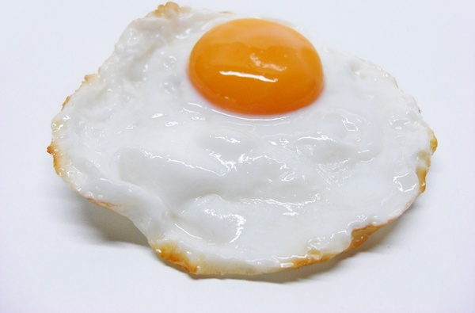

Fried Egg Recipe

Description
It's a fried egg. Can't get much simpler than this. If you can't cook this you should probably stick to fast food from now on, just saying.
Ingredients
Steps
- Place pan over medium heat.
-
Once pan has heated, crack open the egg and allow its contents to fall onto the pan.
- (OPTIONAL): For a crunchier experience, consider also adding the eggshell to the pan.
- Once the egg appears to be solid on the bottom, flip the egg with a spatula.
- Give the egg like 15 seconds, then remove the egg from the heat.
- Consume Egg.
Home